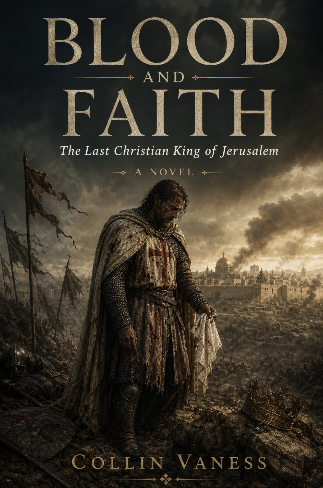

Historical Fiction · Standalone Novel
Blood and Faith
The Last Christian King of Jerusalem
July 4, 1187. Above the Sea of Galilee, the King of Jerusalem kneels in the dust and surrenders the True Cross. What follows is a long penance — and a refusal to die.
Get release news →
About the novel
On the Horns of Hattin above the Sea of Galilee, Guy de Lusignan — King of Jerusalem by his marriage to Sibylla, sworn protector of the True Cross, last Latin sovereign of the Holy Land — kneels in the dust and surrenders to Saladin. The kingdom collapses behind him in the next ninety days. Jerusalem falls. The relic is gone. Acre, his last great seaport, opens its gates without a fight.
Blood and Faith begins the morning he refuses to die anyway.
This is the story of the king history remembers chiefly for one defeat — and of the years that came after it. Through the long siege of Acre, the broken armistice of the Third Crusade, the politics of Richard Lionheart and Conrad of Montferrat, and the founding of a new kingdom on the borrowed island of Cyprus, Guy walks back into a future no one has scripted for him. He keeps Sibylla’s kerchief knotted at his wrist. He keeps a count he no longer dares to stop. He keeps the faith that surrendered the sword.
A historical novel of war, marriage, oath-keeping, and the slow penance of a man who outlived his crown.
Available now

Blood and Faith
“The dust tasted of blood. Guy de Lusignan walked among the dead and could not remember when the walking had begun.”
From the surrender at Hattin to the founding of the Kingdom of Cyprus, Blood and Faith is a novel about the cost of conviction — and the price of refusing to die for it.
Praise

“To call Blood and Faith the Christian equivalent of Martin’s A Song of Ice and Fire wouldn’t give the book the justice it is due.”
“The defeat of Guy de Lusignan becomes less of a royal blunder and more one of devastating hubris from a man who had everything to prove and lost everything.”
“Vaness treads this dichotomy carefully in a way that expounds on catastrophic loss and humanizes the experience.”
“Vaness makes history come alive in a way that even the most passive reader can’t help but pull up a Wikipedia page to learn more.”Read the full review →
“A sweeping historical fiction… grounded in historical reality, one that begs the question of whether redemption is possible.”
“Vaness is a master at taking what could be dry, tedious political moments and transforming them into high-stakes drama.”
“A book with a cinematic feel and quality, visual richness, dramatic pacing, sharp dialogue, and the emotional depth of a great historical film.”
“His novel will resonate with history lovers who enjoy meticulously researched real events, readers who love political intrigue, as well as readers who believe in second chances.”
Awards & Competitions
Blood and Faith is a 2026 entrant in four juried book awards. Results are announced from late 2026 into 2027.
Reader Views Literary Awards
The Historical Fiction Company — Book of the Year
American Book Fest — Best Book Awards
Chanticleer International Book Awards — The CHAUCER Awards
Award placements will be updated here as results are announced.
For readers of
Bernard Cornwell’s Saxon Stories, Ken Follett’s Pillars of the Earth, Sharon Kay Penman’s Lionheart, and the long-arc historical novels of Hilary Mantel.